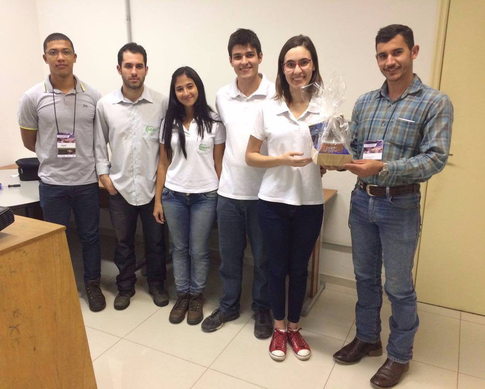

These years my focus was on sharing my knowledge with people outside the university.
This year was a milestone in my career, I was introduced to the agile manifesto and agile management through the internship. At that point I decided that I would like to study more on the subject and apply the manifest in my life
the answer is simple, to continue learning about agile frame work, I need to have contact with the world he started, here on the internet, so I am looking for a job as a web developer.